Case Study 01
Made
Lead Designer · iOS / Android App · 2019–2020

"The format had won. Making a Story look professional was still hard."
"The fastest-growing format in social, and we already knew the editing space."

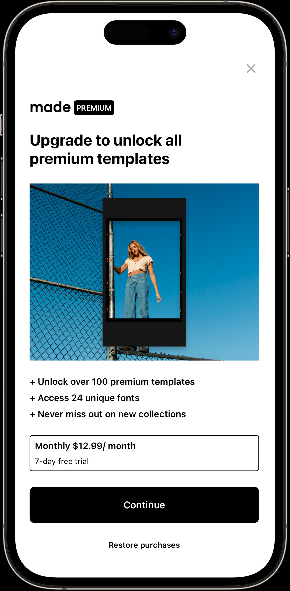
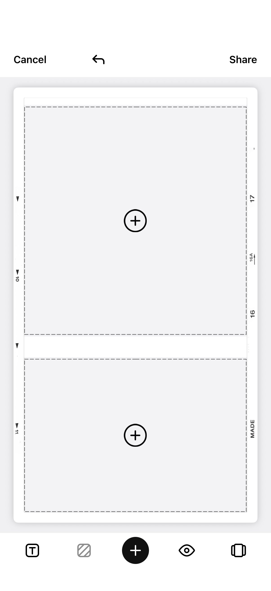
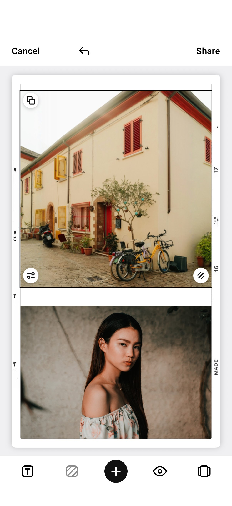
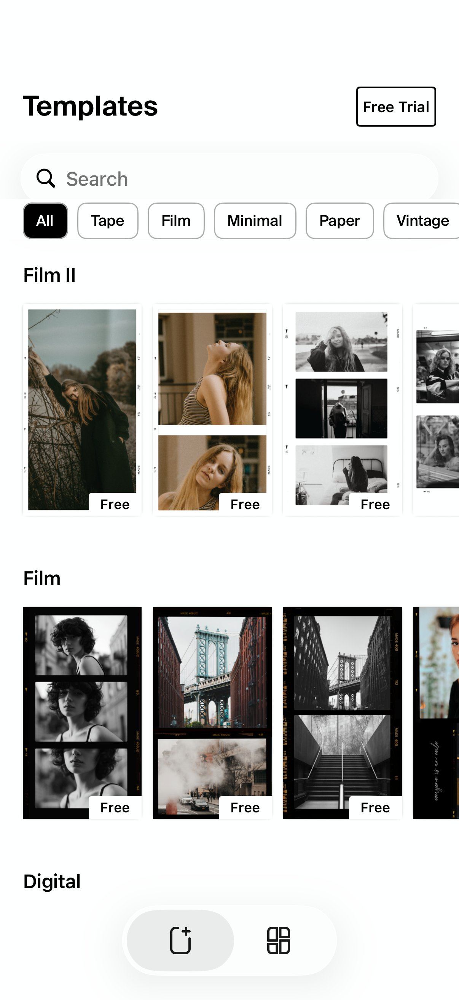
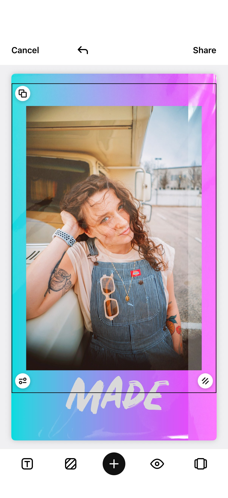
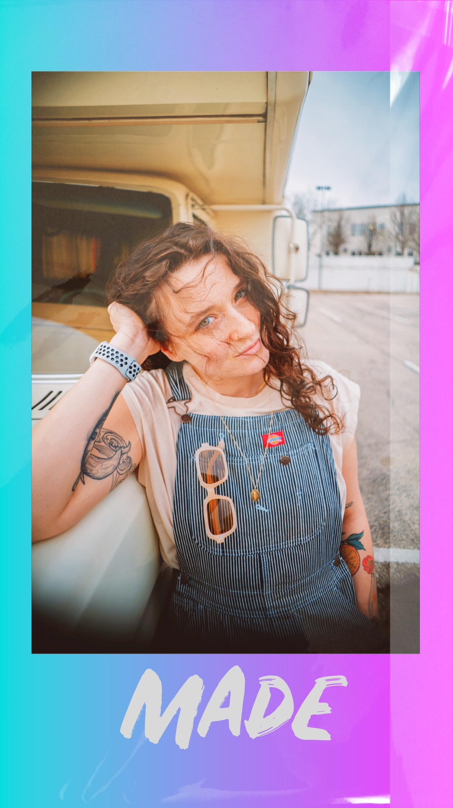
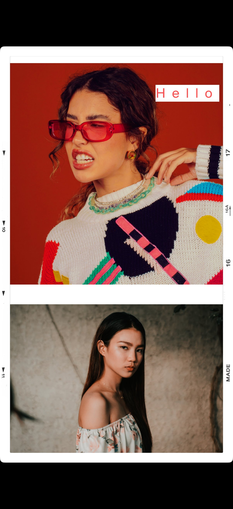
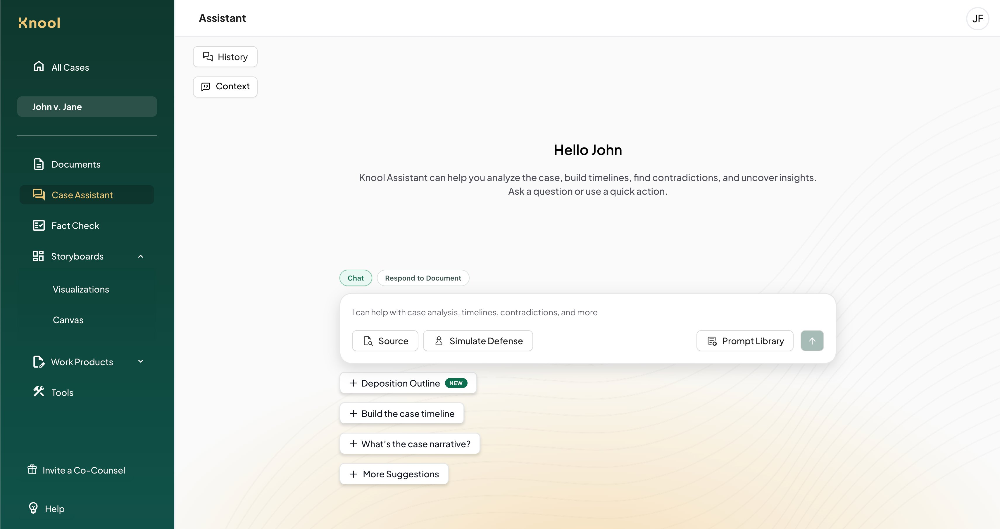
The attorney controls exactly what the AI sees. That control is the trust mechanism.
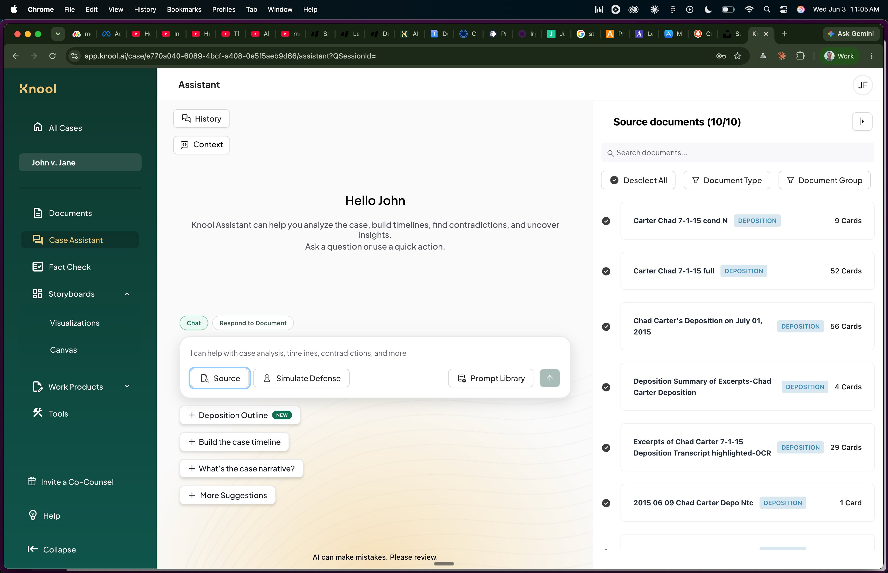
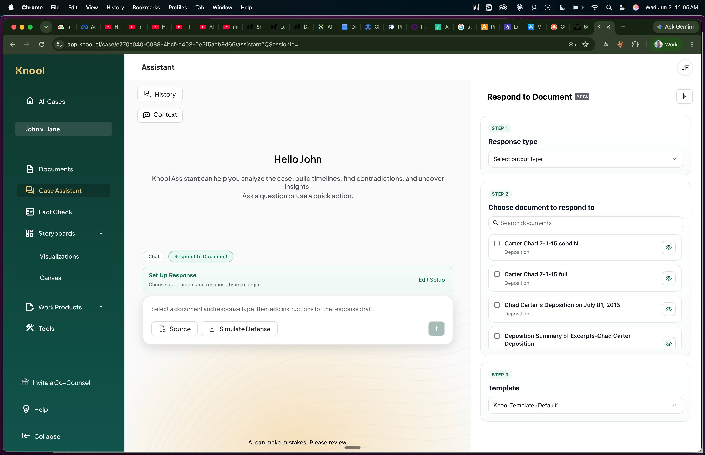
Attorneys prep by mentally running the other side's argument. We made that cognitive work a first-class product feature.
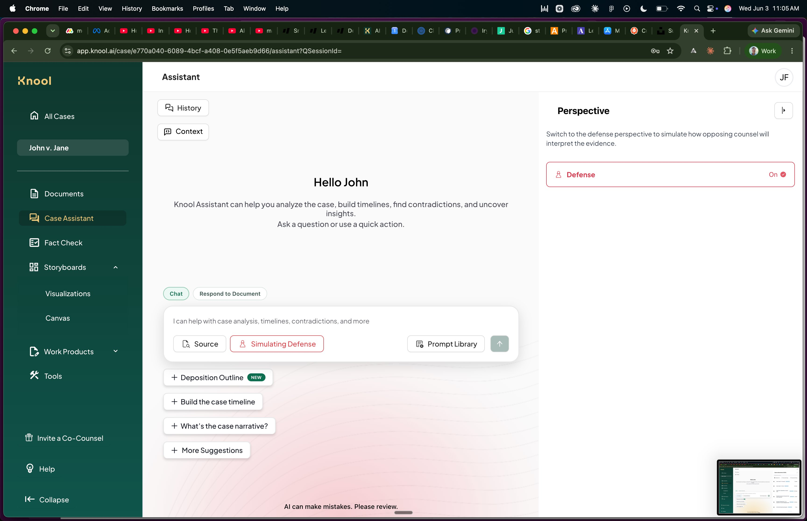
Organized by litigation phase. The AI closes the loop with recommended next steps.
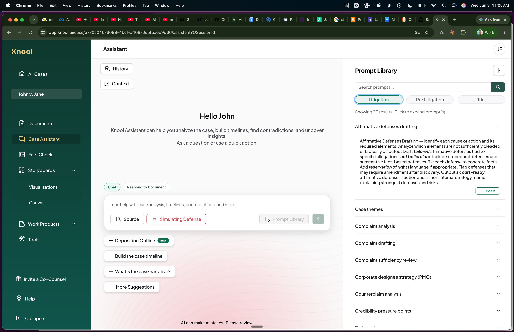
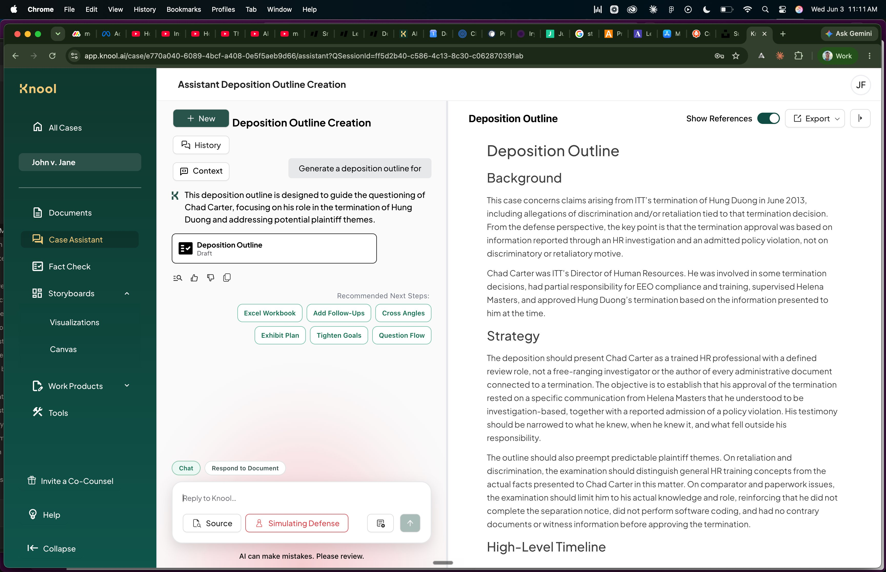